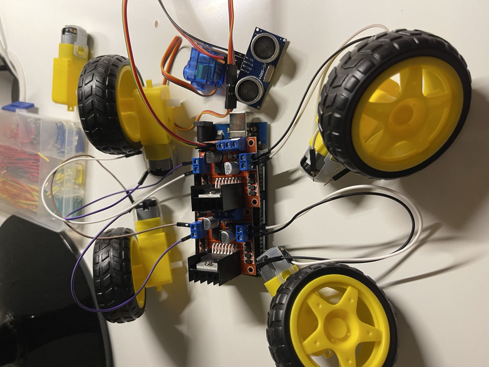

01
Unity game development
Desert Munch
A 3D platformer with hazards, collectible objectives, and goal-based gameplay, developed in Unity as an interactive game experience.
Play the demoFront-end developer and game creator
I’m Leslie Ramirez, an Engineering Technology graduate developing my skills in front-end development, game design, and connected technology.
About me
I studied Engineering Technology with a minor in Business Management at San Jose State University. My work combines programming, hardware, user experience, and collaborative problem-solving.
I’m especially interested in front-end and game development roles where I can keep learning, contribute to a team, and build products people enjoy using.
Selected projects
Projects spanning gameplay, robotics, web development, and user-centered engineering.
Unity game development
A 3D platformer with hazards, collectible objectives, and goal-based gameplay, developed in Unity as an interactive game experience.
Play the demo

Robotics and IoT
A team-built mobile security robot using Python and Raspberry Pi for motion, speech, sensing, and facial-recognition features.
View project siteFrontend development
A curated collection of responsive websites and progressive web assignments, separated from this portfolio for clearer project organization.
View repositoryCapabilities
C++, Python, Java, JavaScript, Swift, HTML, CSS
Unity, Git, GitHub, VS Code, Xcode, Arduino, Raspberry Pi, AWS, Firebase
Object-oriented programming, data structures, Agile development, UI/UX principles, IoT
Teamwork, public speaking, technical communication, fluent Spanish
Let’s connect
I’m open to entry-level front-end and game development opportunities.